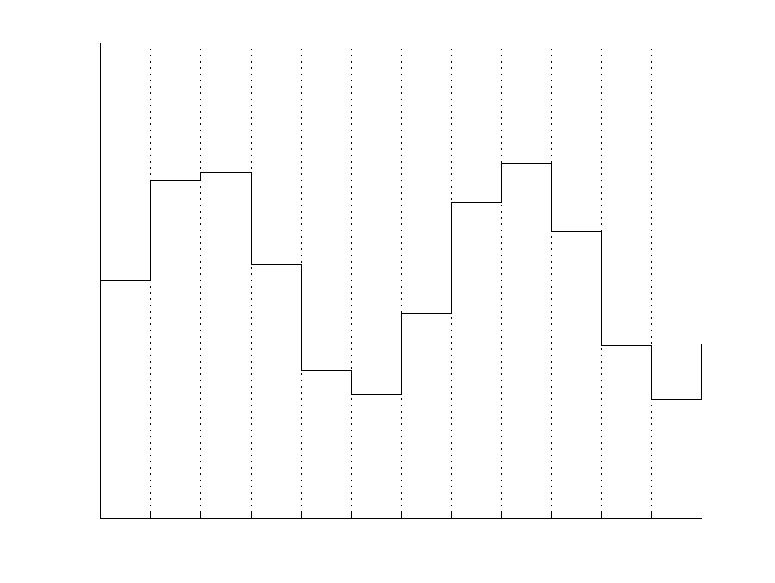

DSP
Digital Signal Processing
Back to the basics :)
© 2020 Sound Particles / Gustavo Reis
Audio: Sound Waves
Everything we call sound are vibrations in a medium, like air.
The string of a guitar or even our vocal chords move and create pressure oscillations in the air.
One vibration cycle occurs when the air is compressed, rarefacted and returns to its original state.
The human ear can hear vibrations occurring between 20 and 20 000 times per second.
The graphic with the sound waves or the oscillogram, in many recording computer programs, shows both compression and decompression of air as a function of time.
In the vertical axis, the variation of the sound pressure indicates the sound volume.
The horizontal axis show the time evolution of the sound wave.
Analog Audio
Microphones have a membrane that moves according to the air vibrations and a circuit to generate an electrical signal.
The voltage of tht electrical signal changes according to he vibrations of the membrane.
All the sound vibrations that are sensed by the microphone's membrane are transformed into voltage oscillations, which are transmitted to an amplifier.
When the electric audio signal arrives into a speaker, the speaker acts on the opposite way of the microphone: its cone vibrates, according to the electric variations, making the air particles to move, creating again the mechanical sound.
Between the microphone's membrane and the speaker's cone we have the electrical audio signal or analog sound.
It is called analog because it is a continuous function of time and thus denotes an analogy between the air vibrations and voltage oscillations.
Digital Audio
When an analog sound is sent to a computer sound card or to a digital audio mixer, the electrical signal must be digitized, i.e. converted to numeric values.
The input of the device where the cable is connected to has an analog/digital converter (ADC) to convert voltage values into numbers.
The digital/analog converter (DAC) does exactly the opposite: it recreates the analog sound after being processed by the computer making it possible to reproduce the sound.
The DAC converts the sound vibrations into numbers by a process of sampling.
This process happens thousands of times per second: the current state of the oscillation is converted into a digital number.
When that sequence of digital numbers is represented graphically it has the wave shape similar to he original sound. But, if we look closer, we will see that waves of the oscillation vary in a "stair" shape.
The digital sound is not continuous in time or amplitude (it is discrete).
If we increase the number of samples per second (i.e. the sample rate) a higher density of samples results making the the digitized signal more similar to the original sound.
Signal Sampling
Signal sampling is the acquisition of a continuous signal (for instance: an analog sound) in discrete time intervals.
The output of the sampler varies only in periodic intervals of time, when it assumes the instant value of the input signal.
Any variation that might occur between the sampling intervals is completely ignored.
Sampling is the key concept for the real-time digital signal processing.
Sampling Theorem
The sampling theorem, also known as the Nyquist theorem, specifies the sampling rate at which an analog signal should be sampled so that all relevant information in the signal is preserved in the sampling process.
This theorem states that:
If a low pass-band signal has the highest frequency equal to $F_{max}$, then for its exact reconstruction it must be sampled at least at $F_s$ sample rate, where $F_s$ is equal or greater than the double of $F_{max}.$
Therefore, so that a sound preserves frequencies between 20 Hz and 20 kHz, the sampling rate should be equal or greater than 40 kHz.
This is why industry adopted 44.1 kHz (44100 samples per second) for the CD since it covers all the audible spectrum.
Nowadays, the technology operates with higher frequency rates to achieve the best possible fidelity to real sound.
Sampling Depth
Each digital sample is a point with the wave or signal value on that instant.
From time to time (for example in CD at each $\frac{1}{44100}$ of second or 0.000023 seconds) the analog/digital converter expresses the wave amplitude with a numeric value.
Consecutive values denote the wave variations which typically are represented as vertical variations in a wave graph where the abscissa axis denotes time.
The number of possible values (or levels) indicating the amplitude of each wave sample is expressed in bits.
A sound sample with 8 bits has 256 possible levels, but the dynamics of the human ear is much more sophisticated since, for example, it can distinguish between the flapping wings of a fly to an airplane's turbine, which is millions of times stronger.
With 16 bits - the format use in audio CDs - we have 65,536 possible audio levels, which implies a substantial gain in quality when compared to the 8 bits resolution.
The 24 bits used on the DVD gives 16,777,216 amplitude variations.
Digital Signal Processing
Digital Signal Processing consists in the application of several computational methods on digital signals, or digitized versions of natural signals (sound, image, electrocardiogram potentials, seismic vibrations, etc.), to analyze, classify, recognize or even transform them.
Nowadays every way of representation and communication of voice, sound and image are digital and apply Digital Signal Processing techniques.
JPEG, MPEG, MP3 and GSM are no more than techniques of Digital Signal Processing.
Basic Concepts
A signal is said to be periodic if it repeats itself at a regular time interval: its period.
A periodic signal is mathematically defined as a function $\tilde x(t)$, where $t \in \mathbb{R}$, which follows he the following equation, where $T$ is a real number and $m \in \mathbb{Z}$:
$\tilde x(t) = \tilde x(t + mT)$.The lowest value of $T$ where the expression is true is called the period of the fundamental component and is designated as $T_0$.
The fundamental angular frequency $\omega_0$ is defined, according to the period of the fundamental by:
$\omega_0 = \frac{2\pi}{T_0}$.A periodic signal $\tilde{x}(t) = \sin(\pi t)$, which has the fundamental angular frequency $\omega_{0} = \pi$, which corresponds to the period $T_{0} = 2$.
To identify the period $T_0$, the frequency $f_0 = \frac{1}{T_0}$ or the angular frequency $\omega_0 = 2 \pi F_0 = \frac{2\pi}{T_0}$, it is always helpful to write it in any of the following forms:
$\sin(\omega_0 t) = \sin(2 \pi F_0 t) = \sin(\frac{2 \pi t}{T_0}).$Given the fact that the $F_0$ of a speech or music sound source varies with time, one assumption is made: it is assumed that the signal is stationary in a very short time duration.
This way, the $F_0$ of a non-stationary periodic signal can be determined through the approximation $\tilde{x}(t) \approx \tilde{x}(t+T_0)$ for the concerned duration.
If a signal can be approximated by using this method, it is called a quasi-periodic signal.
Waveform of a quasi-periodic signal, generated by a saxophone, with $F_0$ = 237 Hz ($T_0$ = 4.2 ms).
Fourier Analysis
Sinusoids are probably the most important of all periodic signals.
In general, a sinusoid is represented by a cosine function with a specific amplitude $A$, frequency $\omega_0$ and initial phase $\phi$:
$\tilde{x}(t) = A \cos\left(w_0 t + \phi \right)$.Jean-Baptiste Joseph Fourier (1768-1830) was the first to have the insight to see the potential for representing a signal as a sum of harmonically related sinusoids, where each component is called a harmonic and has a frequency that is a multiple of the fundamental frequency.
According to Joseph Fourier, any periodic signal can be represented by a Fourier series.
t = 0:1/100:8;
f = 2;
x = sin(2 * pi * f * t);
x1 = 1/3 * sin(6 * pi * f * t);
x2 = 1/5 * sin(10 * pi * f * t);
x3 = 1/7 * sin(14 * pi * f * t);
plot(t,x,t,x1,t,x2,t,x3)
figure;
plot(t,x+x1+x2+x3)

The study of signals and systems using sinusoidal representation is known as Fourier analysis, in honor to Joseph Fourier.
Fourier analysis is a family of mathematical techniques based on the sinusoidal signal decomposition (each function is treated as an infinite sum of sines).
Signals can be classified according to two criteria: discrete or continuous and periodic or non-periodic.
The four elements of the family of the Fourier transforms came from these two criteria, being the most important for this talk the Fourier Series (applies to periodic and continuous signals) - and the Discrete Fourier Transform (applies to periodic signals with discrete time).
The Discrete Fourier Transform is the only class of these two representations that can be used in Digital Signal Processing, since computers can only deal with discrete information and with finite size.
Fourier Series
Any periodic signal represented by a real function $\tilde{x}(t)$ can be constructed as a sum of a number (possibly infinite) of harmonically related complex exponentials:
$$\tilde{x}(t) = \sum_{k=-\infty}^{\infty}a_k e^{jkw_0t}, k \in \mathbb{Z}$$Fourier Transform
Waveforms are signal representations in the time-domain and, thus, can be used directly for several tasks such as beat detection.
Also, by applying correlation to the time-domain signal, it is possible to search for repetitive patterns and, furthermore, detect periodicities on monaural signals.
However, the information in time-domain is not practical for some approaches that require a different kind of information.
By using the Fourier transform (FT), a waveform can be mapped (transformed) into the frequency-domain.
A time-domain graph shows how a signal changes with time, whereas a frequency-domain graph shows how much of the signal lies within each given frequency band over a range of frequencies.
The FT decomposes a given signal function into a sum of sinusoids with different frequencies, showing how much of the signal lies within each frequency band.
This way, FT is widely used for frequency analysis.
The FT is defined for aperiodic continuous waveforms with infinite length as follows:
$$\text{FT}_{\tilde{x}}(f) = \tilde{X}(f) = \int_{-\infty}^{+\infty}\tilde{x}(t)e^{-j2\pi ft}dt$$Discrete Fourier Transform - DFT
When a periodic signal is discrete in time, like in digital signal processing, the FT cannot be applied.
Therefore, for analyzing a discrete signal the Discrete Fourier Transform is applied.
$$\text{DFT}_{\tilde{x}}[k] = \tilde{X}[k] = \sum_{n=-\infty}^{+\infty}\tilde{x}[n]e^{-j2\pi kn}$$Where $k$ is the spectral bin corresponding to each frequency.
Computational problems require signals to have finite length, which stresses the need of a DFT for finite signals.
The DFT for finite signals is defined as follows:
$$\text{DFT}_{\tilde{x}}[k] = \tilde{X}[k] = \sum_{n=0}^{N-1}\tilde{x}[n]e^{-j\frac{2\pi}{N}kn}, \quad k = 0,\cdots,N-1$$where $N$ is the length of the waveform (number of samples).
According to Nyquist-Shannon sampling theorem, the number of useful frequencies of the DFT is limited to the Nyquist frequency $\left( \frac{F_s}{2} \right)$.
Given that the $N$ frequency bins are equally distributed, the frequency of each spectral bin $k$ is: $f_k = k\frac{F_s}{N}$.
This way, the frequency resolution of the DFT is $\Delta f = \frac{F_s}{N}$.
As an example, let us assume that a stationary quasi-periodic signal $\tilde{x}[t]$ has 4096 samples and its sampling rate is 44100 Hz (CD quality).
This means that by applying the DFT, the signal $\tilde{x}[t]$ is transformed into the signal $\tilde{X}[k]$, where the frequency resolution of each bin is $\Delta f = \frac{F_s}{N} = \frac{44100}{4096} = 10.77 Hz$.
This means that the frequency of each spectral bin $k$ is $f_k = k \times 10.77 Hz$.
Fast Fourier Transform - FFT
The calculation of the DFT for $N$ samples requires $N^{2}$ complex multiplications and $N^{2}-N$ complex additions, to obtain $N$ samples in the frequency-domain.
This number of multiplications and additions leads to a prohibitive DFT calculation in real-time.
However, if the number of samples $N$ is a structured number such as a power of two, then the DFT can be efficiently computed using a fast Fourier transform (FFT) algorithm.
The Fast Fourier Transform is a fast algorithm to implement efficiently the DFT, where a number of $N$ samples of the input signal are transformed in $N$ frequency points.
For $N$ structured as a power of two, the required computational effort for this operation is proportional to $N\log_2 N$ in terms of multiplications and additions.
This allows DFT computation in real-time.
Power Spectral Density
Although these Fourier transform equations (FT, DFT and FFT) were described in terms of complex exponentials, these Fourier transforms can also be expressed as trigonometric functions, as a consequence of the complex representation according to Euler's formula.
Complex numbers are represented in the complex plane as $z = a + jb$, where $a$ is the real part, and $b$ is the imaginary part.
The power spectral density (PSD) describes how the energy of a signal is distributed with frequency.
PSD is the squared magnitude of the DFT of a signal $\tilde{x}[n]$.
In general, it is called the spectrum of the signal.
The spectrum is usually represented as a two-dimensional diagram showing the energy of a signal $|\tilde{X}[k]|^2$ as a function of frequency.
Although the spectrum in the last figures is represented using a linear scale for both magnitude and frequency, the logarithmic scale is also commonly used to show each component.
A logarithmic magnitude widely used to represent the magnitudes is the deciBel (dB):
$$\text{dB}(|\tilde{X}[k]|) = 20 \log_{10}(|\tilde{X}[k]|) = 10 \log_{10}(|\tilde{X}[k]|^2)$$Spectral Leakage
The Fourier Transform assumes that the signal is periodic.
Therefore, a continuous sine wave is transformed into a single spectral line in the frequency-domain.

However, in the case of the Discrete Fourier Transform a finite section of the signal history is transformed.
If a pure sine wave does not repeat exactly within the time window, it is truncated and the windowed section of the signal history is assumed to repeat.
This truncation will lead the spectrum to spread out of a single frequency.
This phenomenon is known as leakage due to the signal energy being leaked from a single frequency bin to adjacent frequency bins.
Leakage reduces the accuracy of the spectrum: the measured level of the peaks is less accurate and also the effective frequency resolution of the analysis is strongly affected.
Windowing
In order to minimize the spectral leakage effect, caused by the direct truncation of a signal into a single time window (rectangular windowing), the samples in the frame can be multiplied by a smooth window shape, thus, smoothing the abrupt edges.
This process is called windowing.
The most common windows are rectangular, triangular, Hanning, Hamming, Blackman and Blackman-Harris.

In general, windows have shapes that are positive, bell shaped and symmetric functions.
Windows are used to modify the frequency response of a DFT as a way to reduce the spectral leakage.
The output of a DFT applied to a windowed function is the product of two sequences given by the following equation, where $a_{n}$ is the applied window.
$$Y_{k} = \sum_{n=0}^{N-1}a_{n}\tilde{x}_{n}W_{N}^{nk}, \quad W=e^{-j2\pi}$$